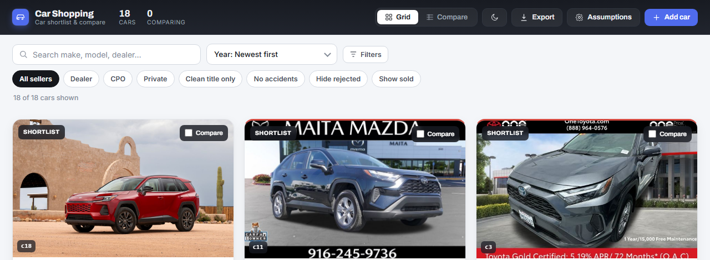
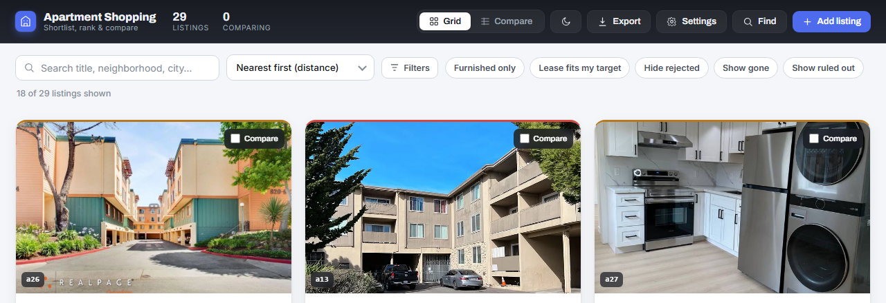

I’m Lukas. I build tools that help people make decisions and get things done. My work spans mobile apps, data models, and AI workflows, from shaping the problem to checking what actually ships.
Independent Projects by Xu Zhou (Lukas)Mobile · Web · Desktop · Developer Tools
From Idea to Working Software
Selected Work
A selection of products and systems I’ve built with AI assistance. Open a case study for the problem, my decisions, and what the evidence supports.
Showing All 11 Projects
XuSeak To-Do◌
A Little Space for What Matters
Today
✓Plan the Day
Make Time to Read
Capture a New Idea
TodayTo-DoHabitsIdeas
Designed Around the DayA Clearer Day
Plan. Act. Make Room.
Works Offline
Product concept illustration · sample tasks, not a device screenshot
Mobile Product & Offline Data
01
XuSeak To-Do
TestFlight · App Review in Progress
An iPhone app that brings today’s work, to-dos, habits, ideas, and a calendar into one calm daily workflow.
Offline First
Optional Sync
Home Screen Widget
A Key DecisionMake the app useful offline; add account sync without making it a prerequisite.
iPhone App · Private Source
Read Case Study: XuSeak To-Do
Problem
Tasks, recurring habits, and ideas belong to the same day, but often live in separate tools. A useful daily app needs to make the next action clear without requiring account setup first.
What I Built
An offline-first iPhone app with Today, To-Do, Habits, Ideas, and Calendar, optional account sync, and an interactive Home Screen widget. The work includes product design, data modeling, native interaction refinement, and release preparation.
How It Works
A pure TypeScript engine sits behind a React Native interface. Local persistence works independently of the account layer; sync merges changes through a separate adapter. I direct product and design decisions, review AI-assisted implementation, and test the installed experience.
Where It Stands
Installed through TestFlight and submitted for App Review. Review follow-up is in progress; there is no public App Store release to download yet.
Evidence and Limits
Independent review caught second-device default preferences blocking sync and stale writes replacing newer changes. Per-key merging and regression tests now cover those cases.
Automated checks are separate from physical-device acceptance. Two-device sync and account-deletion acceptance remain open.
The preview uses fictional tasks. No account data, personal task list, or private source is included.
Sticker price and monthly payments leave out much of the cost of owning a car. I wanted to compare different vehicles under the same holding period, mileage, and financing assumptions, and inspect what changes the ranking.
What I Built
A car-ownership calculator with a seven-part cost model, side-by-side comparisons, cumulative cost charts, and a snapshot of real listings. A separate email-alert prototype ranks listings by estimated ownership cost.
How It Works
The pure TypeScript calculation engine is separate from the React interface and reused in Car Shopping. Listing snapshots keep the comparator static. Supabase, Resend, and scheduled GitHub Actions support the email-alert prototype with double opt-in.
Where It Stands
The comparator is publicly available. The alert backend is a proof of concept; a commercial subscription service has not launched. This project demonstrates a complete path from a model to an interactive product and a supporting backend.
Evidence and Limits
Cost assumptions are illustrative segment-level estimates, not predictions of an individual buyer’s expenses. Listings are snapshots, not guaranteed current inventory.
Engine tests cover calculations, depreciation, and vehicle resolution. The model documentation makes the assumptions inspectable.
The alerts prototype has a public review record. Historical checks are not a promise of current service reliability.
Figures shown are illustrative estimates; the app states its cost assumptions are illustrative. Listings: Auto.dev snapshot. Source is public under the PolyForm Noncommercial license.
↳From Brief to Release
01Define the Brief
02Plan and Assign
03Build and Integrate
04Review and Verify
05Release
Workflow illustration · human direction and review
AI Orchestration & Delivery
03
Multi-Agent Build Orchestrator
Reusable Workflow
A delivery workflow for AI agents: scope the problem, agree on interfaces, divide the work, and verify the integrated result.
Specialized Agents
Shared Contracts
Review Gates
A Key DecisionMatch the team and checks to the risk of the task.
Private Tool · Case Study
Read Case Study: Multi-Agent Build Orchestrator
Problem
Building with several AI agents creates coordination work: agreeing on interfaces, managing dependencies, resolving conflicting changes, and deciding whether the result actually meets the brief.
What I Built
A reusable build playbook with specialist roles, shared contracts, resumable runs, decision records, and acceptance criteria. Small changes use a smaller process; a full product build gets broader review.
How It Works
I define the outcome and consequential trade-offs. The workflow sequences dependencies, coordinates implementation areas, and checks the integrated result. Claude Code supports the bundled parallel workflow; other assistant environments use the role playbook within their available capabilities.
Where It Stands
Used in Car Shopping and Apartment Shopping. Their public decision and review records show the process applied to real products. The workflow itself remains a private tool.
Evidence and Limits
A clean-checkout run caught tests that passed only after a local build. The workflow now requires checking the tests before the build, so local leftovers cannot stand in for a working handoff.
The workflow supports AI-assisted implementation; product judgment and acceptance remain human responsibilities.
No measured productivity gain or fully autonomous delivery claim is made.
Product Stack
Agent Skills · Role Definitions · Structured Briefs · Shared Contracts · Review and Release Workflows
Evidence As Of
2026-10-27
Dream Laws
A Different Rule in Every Dream
IChoose a Route
IIBuild a Deck
IIIAdapt to the Dream
Game-system illustration · not a gameplay screenshot
Game Systems & Simulation
04
Dream Laws: Card Roguelike
TestFlight · In Development
A mobile deckbuilder where each dream changes the rules of play, backed by a reproducible game engine and balance simulations.
Seeded Engine
Simulation Tools
Save Migration
A Key DecisionUse simulation to verify the rules; use playtesting to judge the experience.
Mobile Game · Private Source
Read Case Study: Dream Laws: Card Roguelike
Problem
A card game needs varied choices that remain understandable. Changing the rules adds variety, but makes progression, difficulty, and saved-state behavior harder to reason about.
What I Built
A portrait card roguelike with encounters, deck-building decisions, branching progression, and persistent runs. Simulation tools exercise the game engine across repeatable seeds.
How It Works
A pure seeded engine separates game rules from the mobile interface. Replays and generated-map checks expose progression errors. Save migrations preserve ongoing runs as the rules change.
Where It Stands
A first iOS build has been uploaded to TestFlight. Newer chapter work is still in development. Store release, purchase completion, and broader human playtesting remain ahead.
Evidence and Limits
Review caught older saves missing a newly guaranteed preparation stop before a boss. Migration tests now cover those paths without rewinding active battles or repeating rewards.
Dated verification records include exact replays and generated-map checks. Repeatability and valid routes do not establish enjoyable difficulty.
The public case study does not expose private source or link to the separate unlisted tester build.
Several local apps needed the same file safety, request validation, and recovery behavior. Maintaining separate copies made a fix easy to miss in one consumer.
What I Built
A small, versioned library for atomic JSON writes with ETags, a guarded static server, server-sent events, and single-server locking, with no runtime dependencies.
How It Works
Shared mechanisms sit behind explicit interfaces while each app keeps its own domain logic. Real-socket parity tests check that extracting the shared implementation preserves consumer behavior.
Where It Stands
Version 0.1.0 is released and used by AI Usage Tracker. Other planned consumers have not yet migrated; this is an incremental extraction.
Evidence and Limits
Parity tests check consumer behavior through actual HTTP sockets.
One application has migrated. The package is not presented as a completed migration of every local app.
Localhost guards and conflict checks address specific risks; they are not a claim of absolute security.
Workflow illustration · no source excerpts or personal notes
AI Synthesis & Source Evidence
06
Creator Advisors
Private Desktop App
A source-cited library that turns long-form creator videos into connected ideas you can read and trace back to the original.
Transcript Matching
Computed Timestamps
Local Reader
A Key DecisionCompute quotation locations from the source instead of trusting generated timestamps.
Local Knowledge App · Private Source
Read Case Study: Creator Advisors
Problem
Useful ideas are scattered across long videos. Summaries are easier to skim, but can lose context or point to a timestamp that does not support the claim.
What I Built
A transcript-to-knowledge pipeline with source-linked topic pages and a desktop and browser reader. Transcription adapters feed one pipeline, and quotation matching produces the citation locations.
How It Works
AI assists organization and synthesis. Deterministic import checks require quoted wording to match the transcript and compute timestamps from those matches. The reader keeps sources accessible beside the interpretation.
Where It Stands
Implemented for personal use with multiple creator libraries. This case study describes the workflow without publishing the private library, transcripts, or source code.
Evidence and Limits
An import dry run caught altered capitalization in quoted wording and required correction before import. Source checking constrains the AI output.
A matching quote establishes traceability, not the truth of the speaker’s claim or the completeness of a summary.
No claim of measured learning improvement or fully autonomous research is made.
Product Stack
TypeScript · Node.js · Electron · Transcript Processing · Markdown
Evidence As Of
2026-10-27

Comparison & Decision Support
07
Car Shopping
Live Web App
A used-car shortlist that raises risk flags, tracks features honestly, and ranks candidates by estimated cost of ownership instead of sticker price.
Risk Flags
Cost Ranking
Google Sheets Sync
A Key DecisionTreat an unknown vehicle feature as unknown, not as absent.
Shopping for a used hybrid SUV with a deadline, I had listings scattered across five sites with inconsistent wording. Sticker price is a poor way to rank near-identical cars: the cheaper one can depreciate faster, carry rental-fleet mileage, or hide an accident.
What I Built
A used-car shortlist with feature tracking, risk flags, estimated ownership costs, comparison, and Google Sheets export. Listings are captured with an assistant into a typed seed catalog; the app does not scrape listing sites.
How It Works
A pure domain engine handles the risk rules, ranking, and export. The ownership-cost engine is reused from Car TCO Compare. Browser storage holds the working shortlist, and an Apps Script endpoint supports Sheets export.
Where It Stands
Built for my own car search and available as a public, single-user web app. It shows how a broad cost model can become a focused decision workflow.
Evidence and Limits
Review found an unused URL-import feature could replace saved work. I removed it; regression tests verify that crafted URLs cannot change saved data.
The public decision record explains the architecture and trade-offs.
Cost figures are estimates. Risk flags surface information to investigate; they do not verify a vehicle’s history.
Product Stack
React · TypeScript · Vite · Vitest · Google Apps Script · GitHub Actions
Evidence As Of
2026-10-27

Geospatial Data & Search Workflow
08
Apartment Shopping
Live Web App
A rental shortlist that brings lease fit, distance, risk flags, and search progress into one place, from first look to final decision.
Offline Geocoding
Lease Fit
Status Tracking
A Key DecisionKeep personal notes intact when the listing catalog changes.
Hunting a short-term Bay Area lease across Zillow, Craigslist, Apartments.com and building sites, browser tabs and spreadsheets lost context: no photos, no distance to what mattered, no record of what had been contacted, toured or ruled out.
What I Built
A rental shortlist with lease fit, availability, market comparisons, risk flags, search status, and side-by-side comparison. Offline location lookup makes distance comparisons possible without a geocoding request for every listing.
How It Works
The pure engine handles ranking, geocoding, filters, and export with an injectable clock. A seed catalog and browser-stored overlay use stable identifiers so catalog updates do not erase notes.
Where It Stands
Built for my own rental search and publicly available as a single-user app. It reuses a proven comparison workflow while adapting the data model to a different decision.
Evidence and Limits
Distance is straight-line, not driving or transit time. Market comparisons are estimates.
Listings are curated with assistant support. Scam and income-restriction flags are recorded at capture time, not detected by an in-app AI service.
The test report and review findings provide dated evidence; engine tests do not establish every UI behavior.
Capability illustration · no account or usage data
AI Tools & Desktop Integration
09
AI Usage Tracker
Local App · Partial Integrations
A local Windows dashboard for AI subscription usage and reset times, designed to make remaining allowance, stale readings, and connection status clear at a glance.
Windows Sidebar
Quota Windows
Explicit Freshness
A Key DecisionKeep a missing or stale reading visibly different from available quota.
Working across AI tools means checking separate usage limits, reset windows, and dashboards. A missing or stale reading can easily look like available capacity unless the interface makes uncertainty explicit.
What I Built
A Windows sidebar and browser dashboard with separate quota windows, reset countdowns, usage history, connection details, and settings. The desktop launcher starts the local service and restores the existing app when opened again.
How It Works
Provider adapters normalize observations into a common model while preserving source timestamps and units. A local server stores usage on the device, and the Electron shell hosts the same interface as the browser. Codex readings use its installed account interface; the other provider connections are still being validated. Unknown and expired values remain explicit.
Where It Stands
The Windows and browser app is usable, with Codex readings reconciled against their provider source. Claude and Cursor live reconciliation remain pending. Public source is available; account data stays local.
Evidence and Limits
Codex has a verified live reading. Claude and Cursor are incomplete integrations, not confirmed live connections.
Provider observations retain their timestamps and units. Subscription prices are user-entered and do not establish the size of a quota.
The visual is a capability illustration with no account or usage data. The dashboard does not run an AI model.
Capability illustration · no workspace or project data
Product Organization & Desktop Experience
10
X Command Center
Private Desktop App
One local hub for project progress, scheduled work, app launch, and the next thing that needs attention.
Project Overview
Shared Desktop UI
Service Recovery
A Key DecisionKeep one shared snapshot behind the desktop and browser views.
Private Local App · Case Study
Read Case Study: X Command Center
Problem
As personal projects grew, the context needed to resume work was scattered across folders, repositories, notes, and schedules. Finding what was unfinished or needed attention became a task of its own.
What I Built
A project hub that connects purpose, status, next steps, app launch, scheduled work, and history. A Windows desktop window and browser use the same local interface and service.
How It Works
A deterministic collector reads an explicit personal-project allowlist and builds one shared snapshot from project documentation, version-control metadata, site checks, and schedules. The interface reads that snapshot. A coordinated local service supports refresh, recovery, and desktop launch; opening the installed app again restores the existing window.
Where It Stands
Available as a local browser and Windows app with Start and Desktop launchers. The design establishes a consistent visual language across related tools while keeping project facts close to their source. The public case study uses a capability illustration instead of a real workspace screenshot.
Evidence and Limits
Testing the actual desktop launch action caught an outdated configuration reader that ordinary checks had missed. The callers now share one reader with regression coverage.
The collector is deterministic and makes no AI calls. Status comes from project records, not an automatic assessment of productivity.
Private project data, schedules, notes, and runtime snapshots are excluded from this case study.
Product Stack
Node.js · JavaScript · HTML and CSS · Electron · Local Service · Structured Project Metadata
Evidence As Of
2026-10-27
↳From Capture to Understanding
01Capture Sources
02Organize and Synthesize
03Review in Context
04Read and Practice
Workflow illustration · no personal notes or source excerpts
AI-Assisted Knowledge & Learning
11
Wisdom & Knowledge Base
Private Learning System
A bilingual library that connects captured sources, living topic pages, reviewed takeaways, and language practice.
Source Ingestion
Bilingual Synthesis
Review and Practice
A Key DecisionKeep source relationships and review state alongside the synthesis.
Private Content · Case Study
Read Case Study: Wisdom & Knowledge Base
Problem
Capturing useful ideas is easier than turning them into a coherent body of knowledge. Notes accumulate across sources, while related ideas, important highlights, and material worth practicing stay disconnected.
What I Built
A source-ingestion pipeline and reader with bilingual topic pages, themed sections, highlighted passages, dated digests, and language practice decks. Review flows let the owner internalize external material, approve assistant proposals by topic, and undo an import.
How It Works
Configured OneNote sources are exported locally and mirrored into structured text. An assistant workflow incrementally folds captures into living topic pages, preserving source relationships and review state. A shared reader presents the material locally and as an encrypted hosted copy; publishing checks screen content before sync.
Where It Stands
The reader and learning workflows are implemented for personal use, with a local editing path and an encrypted reading copy. This portfolio describes the system and its design decisions without exposing the notebook, personal topics, study material, or access details.
Evidence and Limits
AI-assisted synthesis is an explicit workflow; organizing a source does not establish that its claims are correct.
Local review and practice tools differ from the encrypted hosted reader. There is no unrestricted public demo.
No measured improvement in retention or learning is claimed. Personal notes and source excerpts are not published here.
Release states and evidence reviewed 2026-10-27. Screenshots are public previews; concept and workflow illustrations are labelled. Each case study records its limitations.
How I Build
I use AI agents to help implement and review. I own the problem framing, product choices, and the decision about what is ready to ship.
01
Start with the Decision
Identify who needs help and what they need to do. Make the assumptions, data limits, and smallest useful workflow explicit.
02
Build for Change
Keep domain rules separate from the interface and services. Write down trade-offs, preserve saved work, and reuse code when real repetition justifies it.
03
Look for What Breaks
Use tests, independent review, and the installed or deployed app. In Car Shopping, review caught an unsafe URL import; I removed it and kept a regression test.
What I Bring
Hands-on experience building with AI, a data science foundation, and product judgment.
AI Workflows
Scope and direct specialized agents
Design contracts, source checks, and review gates
Turn verified lessons into reusable workflows
Data Science
Python, pandas, scikit-learn, and XGBoost
Prediction, clustering, and topic modeling
Make model assumptions and uncertainty visible
Product Judgment
Frame useful problems and prioritize the first journey
Translate complex data into comparisons and next actions
Balance UX, privacy, operating cost, and release risk
End-to-End Delivery
Mobile, web, and local desktop products
Separate tested rules from storage and UI
Verify releases and document unfinished acceptance
Project stacks describe the software used in each build. The case studies explain my decisions, AI’s role, and the checks behind the result.
Earlier Work
The experiments and data projects behind how I think today. Browse by category.
Scraped RateMyProfessors for three universities and fit a regression on what drives professor ratings.
Continue the Conversation
Let’s Build Something Useful
Interested in working together? I’d welcome a conversation about AI, data science, or product work. Pick a project and I can walk you through the decisions behind it.